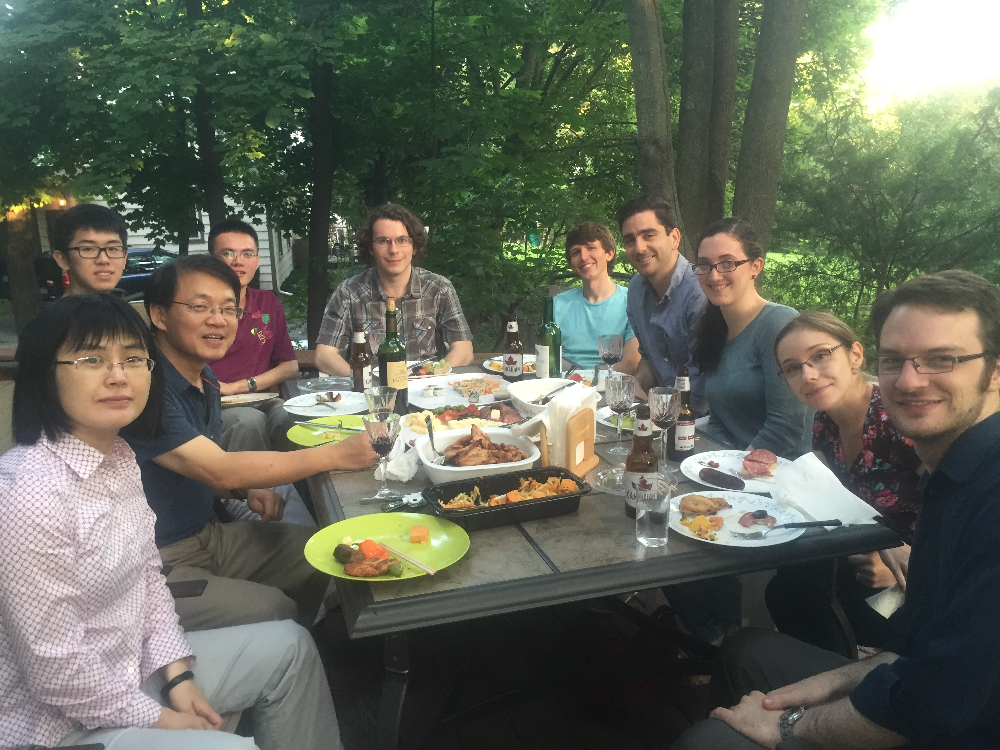
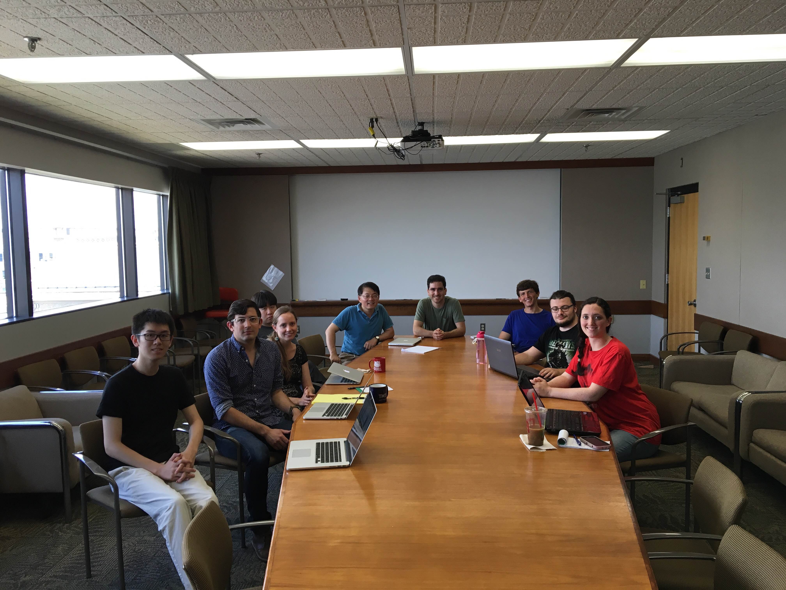
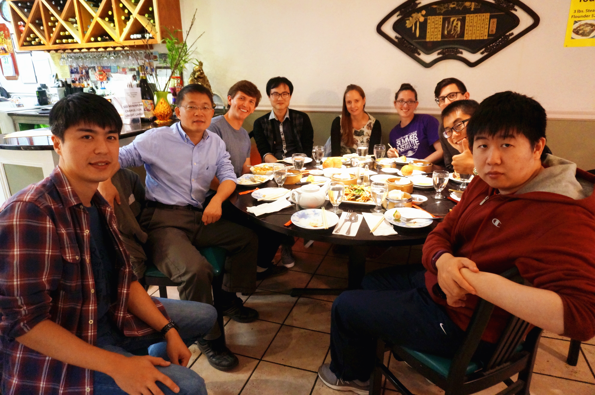
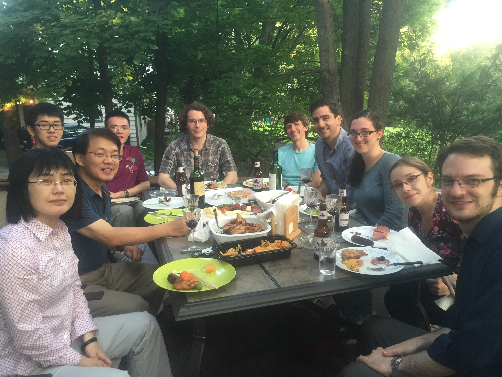
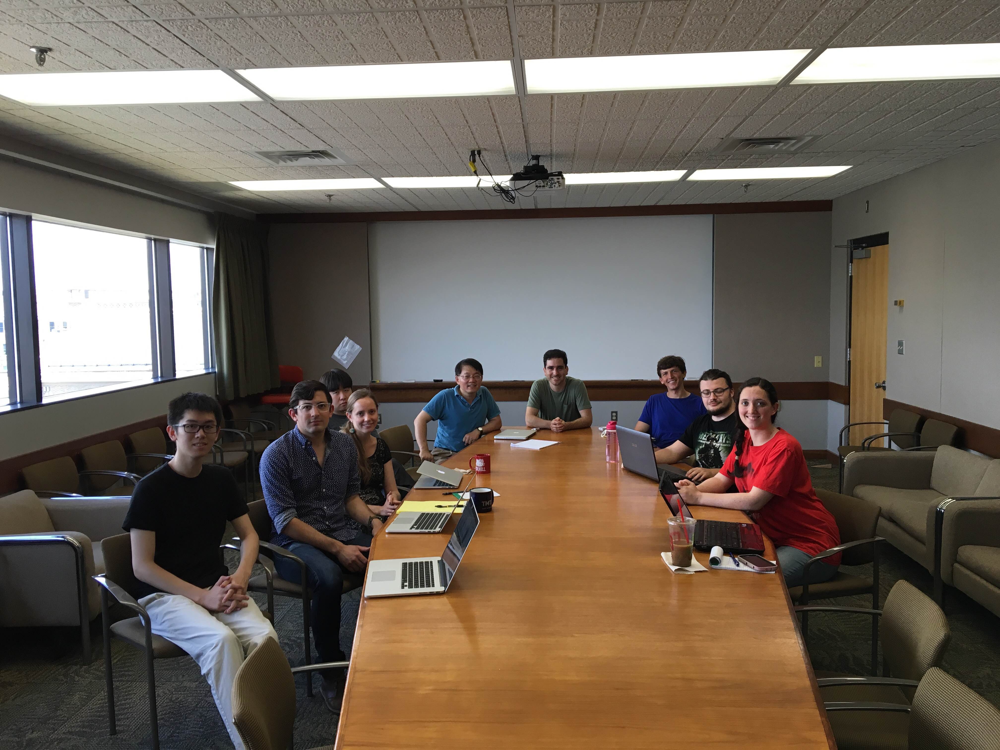
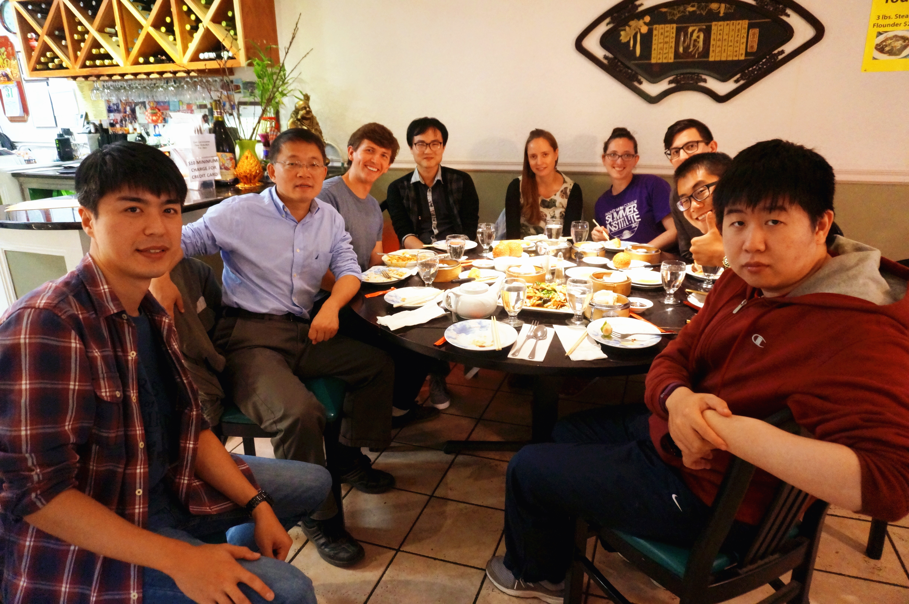
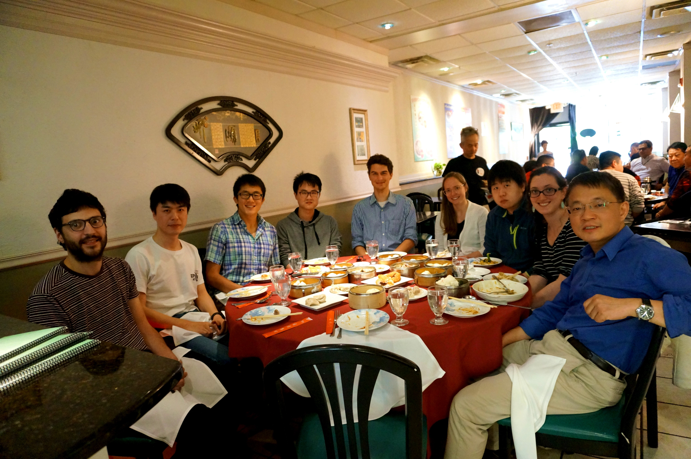
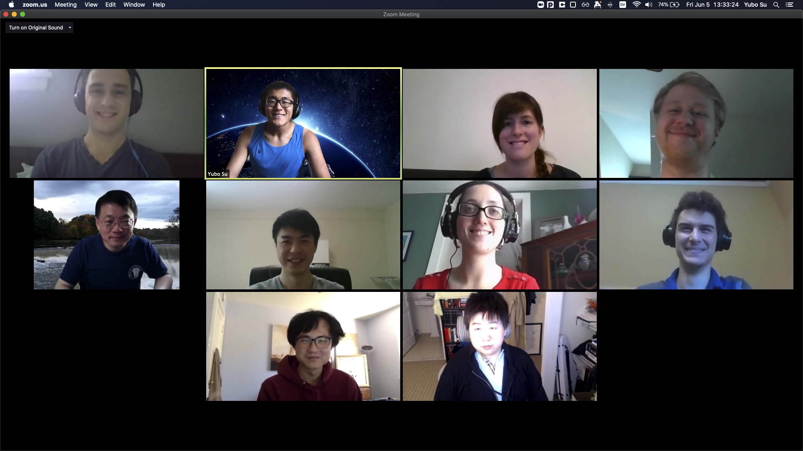
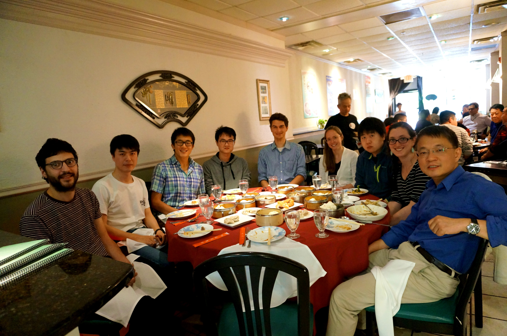
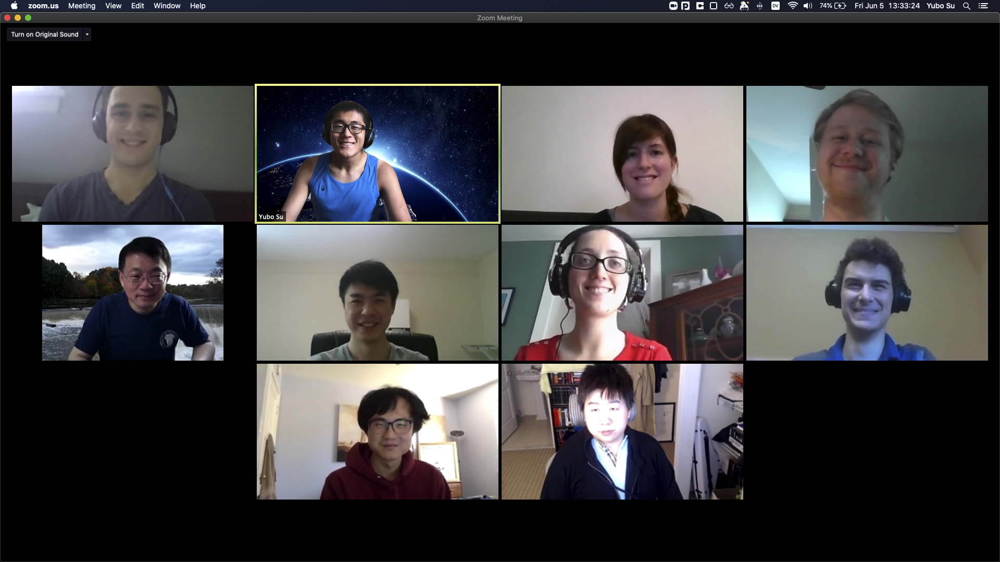

Dong Lai's Research Group
Back to
Dong Lai's Homepage .
Our current research interest includes
- Astrophysics of Exoplanets: dynamics, formation,
protoplanetary disks, star-planet interactions, etc
- Compact Objects: neutron stars,
black holes, white dwarfs;
gravitational wave sources, radiative processes, condensed matter, neutrinos, etc
- Astrophysical (particle and fluid) dynamics
in general: celestial mechanics, waves, oscillations,
instabilities, etc
See our Publications
(updated occasionally)
and Representative Papers,
or look at
arXiv or
ADS .
Selected recent talks: (maybe useful for getting a quick overview
of our research for students/postdocs)
-
Formation of Merging Black-Hole Binaries
(Weizmann-23,Hebrew,Cambridge; earlier version: Taiwan-22,SYSU-22,GW conf-21; Caltech 20; Nanjing multi-messenger 19, TDLI, Xiamen, CCA-2017-18)
-
Circumbinary Accretion
(
KITP 3/3022; earlier edition: Cambridge-disks, Zejiang 21; UCB 20; TDLI, SHAO, UIUC, KIAA, IHEP, UCLA,
Harvard 17-19)
-
Spin-Orbit Dynamics in Exoplanetary Systems
(UW 22; earlier:...)
-
IXPE detection of polarized X-rays and QED resonance
(
chalk talk).
-
Forming Short-Period Planets
(KITP 5/2019;
earlier: Astro Dynamics 7/2019; Extreme Solar System 8/2019)
-
Dynamical Evolution of Compact Multi-Planet Systems
(Leiden 9/2018)
-
Misaligned Planets/Stars, Disks and Rings (and Planet Nine)
(CITA, KIAA, Tsinghua, IAS, Nice 2016-17; Earlier version:
Caltech, Bern, SJTU, SHAO, Tsinghua 2014-15)
-
Merging Compact (NS & WD) Binaries (Penn State 2017; Earlier versions:
Chicago-14, Prague-13; SHAO-Anniversary-12, Texas-13, Xiameng-13, USTC-12 etc)
-
Magnetic NSs and Polarized X-Rays (IHEP-CAS 2016; eXTP 2018)
-
Extreme Exoplanetary Systems (Harvard-ITC, Cornell, UCSC, Berkeley 2015;
earlier version: Columbia-2015, USTC-2015; Chicago 10/2014)
-
Physics in Strong Magnetic Fields (Overview talk at ISSI workshop
on Strongest magnetic fields in the universe, Bern, 2/2014)
-
BH Accretion and Physics of QPOs (Prague Synergy "Compact
Objects", 11/2013)
-
Disk Accretion onto Magnetic Stars (Harvard 5/2015; review-Geneva-6/2013;
Astro/Space Plasma, Lijiang-7/2013; SHAO 1/2014)
-
Tidal Dissipaton in Binaries: From Merging White Dwarfs to Exoplanetary
Systems (Harvard,KIAA,SHAO,Cornell 2013;
earlier version: CITA,IAS,McGill,etc 2012)
-
Astrophysics of Compact Objects (Part I),
(Part II) (Two lectures in "Challenge" Workshop, Sao Paulo)
-
Exciting Wave and Modes in BH Accretion Disks and Other Rotating Astrophysical
Flows (UCSB, MPA, Saclay, SHAO, 2010-11; IAU-2012; NAOC 2013)
Some Older Research Stuff and talks
GROUP MEMBERS:
 8/14,

7/15,

7/16,

9/17
8/14,

7/15,

7/16,

9/17
 7/18

5/19

6/20.
7/18

5/19

6/20.
 5/21.
5/21.
 5/22.
5/22.
GROUP NEWS
Graduate students:
Research associate:
-
Rixin Li (Ph.D.'20, U.Arizona) (2020-):
Disk dynamics, exoplanets.
-
Darryl Seligman (Ph.D.'20, Yale) (2022-):
Planetary and fluid dynamics, solar systems etc.
Undergarduate students:
Former students:
Ph.D. students:
-
Wynn Ho (Ph.D. 2003):
Neutron stars: GWs and atmospheres.
Hubble Fellow, Stanford/MIT -> Harvard CfA ->
Faculty at Univ. Southampton and Haverford.
- Matt Van Adelsberg (Ph.D. 2005)
NS atmospheres. Postdoc at
U.Colorado -> KITP; Georgia Tech ->
"Metron" (Scientific Consulting) -> Senior manager, data science at Capital one
- Akiko Shirakawa (Ph.D. 2007):
Magnetic accretion in X-ray binaries;
Nucleosynthesis in young NSs.
Thesis
- Chen Wang
(Ph.D. 2007 NAOC; co-advisee):
Pulsar kicks, wave propagation in
NS magnetospheres. Research Associate Professor at NAOC (Beijing).
- Zach Medin (Ph.D 2008):
Matter in strong B fields and NS.
Trottier Fellow at McGill -> Permanent Staff at Los Alamos Nat. Lab.
Thesis
-
David Tsang (Ph.D. 2009):
BH accretion disks.
Fairchild Fellow at Caltech; Trottier Fellow at McGill -> Prize
Fellow at Maryland --> Faculty at U.of Bath (UK).
Thesis
-
Wen Fu (Ph.D. 2012): Wave dynamics of
accretion disks and other rotating astrophysical flows.
Research Scientist at Rice Univ.
Thesis
-
Jim Fuller (Ph.D. 2013):
White dwarf binaries, tides, seismology.
DuBridge Fellow, Caltech/KITP -> Faculty at
Caltech (2017).
Thesis
-
Natalia Storch (Ph.D. 2015):
Exoplanets & Compact Objects.
Burke Postdoc Fellow in Theoretical Astro, Caltech.
Thesis
-
Bin Liu (Ph.D. 2016 USTC; co-advisee):
Secular Dynamics, exoplanets and compact objects.
Shanghai Astro Observatory.
-
Ryan Miranda (Ph.D. 2017): Accretion disks around protostars and black holes.
Postdoc at IAS Princeton.
Thesis
-
John J. (JJ) Zanazzi (Ph.D. 2018): dynamics of protoplanetary disks, planets and neutron stars: Postdoc fellow at CITA.
Thesis
-
Kassandra Anderson (Ph.D. 2019): Exoplanets, binaries, etc:
Lyman Spitzer Jr Fellow at Princeton Univ.
Thesis
-
Michelle Vick (Ph.D. 2020): Tides in compact objects and exoplanets:
CIERA fellow at Northwestern University.
Thesis
-
Bonan (Michael) Pu (Ph.D. 2020): Exoplanets, dynamics:
D.E.Shaw Group.
Thesis
-
Yubo Su (Ph.D. 2022): fluid and few-body dynamics, GWs and planets. Lyman Spitzer postdoc fellow
at Princeton Univ.
Thesis
Other Cornell Ph.D. students I have worked with or co-supervised:
-
Phil Arras (Ph.D. 1999 with Wasserman):
Neutrino transport in strong B fields. Postddoc at CITA,
KITP. Faculty at U. Virginia
-
Harald Pfeiffer (Ph.D. 2003 with Teukolsky):
Mainly numerical relativity; warped accretion disks.
Fairchild Fellow at Caltech. Faculty at CITA, AEI
-
Francois Foucart (Ph.D. 2011 with Teukolsky):
Warped disks, exoplanets. Postdoc fellow at CITA -> Einstein fellow at
UC Berkeley --> faculty at U. New Hampshire.
Undergraduate students:
- Paul Wiggins (A&EP, '99):
Tidal interaction in NS-BH binaries. Ph.D. at Caltech
- Carolyn Sealfon (college scholar, '00):
Matter in strong B-fields. Ph.D. at U. Penn
- Brian Cameron (college scholar, '03):
Core collapse dynamics; matter in strong magnetic fields.
Ph.D. at Caltech.
- Marcus Woo (Physics, '03):
Radiation from neutron stars. Ph.D. at U. Maryland
- David Schwab (Cornell, '04)
- Jared Gabor (Caltech, '05): REU summer student
2004. Ph.D. at U. Arizona
- Brad Austin (Columbia, '06): REU summer student
- Tony Li (A&EP, Cornell, '09):
Ph.D. at Stanford.
- Yuanjian Zheng (Cornell '13, Rawling Presidential Scholar)
- Jeff Gerber: 2013 summer REU student
- Michael Hammer (Cornell '15): Planets in binaries.
Ph.D. at U Arizona. NSF graduate Fellow.
- Grigoriy Tabak (Cornell '16): N-body Dynamics: Ph.D. at U. Rochester
- Liantong Luo (PKU '16: visiting student from Peking University)
- Wenrui Xu ('17): Secular Dynamics, resonances; neutron stars: Ph.D. at Princeton.
Evection resonance ;
2nd-order MMR ;
Neutron star tides ;
MMR nonlinear .
Former Visiting Associates and postdocs:
- Dr. Alexander Potekhin (Ioffe Institute, St Petersburg);
- Dr. Hang Zhang (Nanjing Normal University);
- Dr. Chen Wang (NAOC, Beijing);
- Dr. Xiangdong Li (Nanjing University);
- Dr. David Tsang (Cornell): Postdoc;
- Dr. Teruaki Enoto (Tokyo);
- Dr. Thierry Foglizzo (Saclay);
- Dr. Cong Yu (CAS, Yunnan): 2011-2012
- Dr. Heloise Meheut (Univ. Bern): 2011
- Dr. Guoqiang Ding (CAS): 2013
- Dr. Jiri Horak (Prague): 2012,2013,2014
- Dr. Yefei Yuan (USTC): 4-5/2015
- Mr. Evgeni Grishin (Visiting Ph.D. student from Technion): 7-8/2016:
-
Diego Munoz (Harvard Ph.D.'13) (2013-2016): disks, hydrodynamics, exoplanets, etc.
-
Jean Teyssandier (Ph.D.'14, IAP-Paris) (2017-2019):
Dynamics, exoplanets, disks, etc.
-
Bin Liu (Ph.D. '16, USTC) (2017-2020):
Dynamics, black hole binaries etc.
-
Janosz Dewberry (Ph.D.'19, Cambridge) (2019-2020): (visiting associate)
Astrophysical Fluid Dynamics.
-
Laetitia Rodet (Ph.D.'19, Grenoble) (2019-):
Dynamics, exoplanets, etc.
- Short-term visitors (~a week): Dr. Andrew Melatos (U. Melbourne, 2008),
Dr. Wenfei Yu (SHAO, 2012), Dr. Gordon Ogilvie (Cambridge, 2013),
Dr. Feng Yuan (SHAO, 2013)
Joining our group:
We welcome graduate students (both in astronomy and physics) who are very motivated,
curious and passionate about research.
Students interested in joining our group are encouraged to
contact Dong Lai as early as possible.
We gratefully acknowledge NSF, NASA (ATP, exoplanets, Chandra, Fermi programs),
the A.P. Sloan Foundation and the Simons Foundation for
supporting our research over the years.
Back to
Dong Lai's Homepage .
{kind=link}
{kind=link}
{kind=link}
{kind=link}
{kind=link}